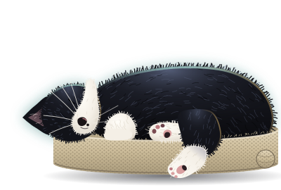
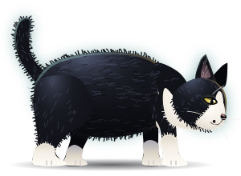

복자 캐릭터 시트 v2
대표님 반려묘 사진 두 장(식빵 자세·바구니에서 자는 모습)을 보고 손으로 좌표를 잡아 다시 그린 반실사 일러스트입니다. 사진은 이 페이지와 저장소에 넣지 않았습니다(집 내부가 보여 로컬 전용). 분위기는 새 콘셉트에 맞춰 “사람의 숨은 영물을 알아보는 신비로운 고양이” — 노란 눈의 은은한 빛, 왼쪽 위 은빛 청록 달빛 테두리, 오른쪽 금빛 테두리, 어두운 바탕에서 검은 몸을 떼어 내는 깊은 청록 기운.
포즈 3종

bokja-loaf.svg
bokja-sleep.svg
<g id>가 있어 움직일 수 있다. bokja-push.svg작은 크기·밝은 바탕 확인
화면용 판(handoff/bokja-svg.ts, 털 결을 줄인 판)과 같은 그림입니다. 밝은 바탕에서는 청록 기운을 끄고(aura:false) 한지색 스티커 테두리를 켭니다.
160px · 어두운 바탕96px밝은 바탕
밝은 바탕
색 표
| 견본 | 이름 | 값 | 쓰임 |
|---|---|---|---|
| 먹털 | #121319 | 검은 털 바탕(순검정 #000 대신 푸른 기 먹색). 가장 어두운 곳 #07080c | |
| 달빛 결 | #5d6784 | 검은 털 윤기·털 결 선(투명도 40~55%) | |
| 흰 털 밝음 | #fffdf8 → #f4efe6 | 턱받이·주둥이·양말 | |
| 흰 털 그늘 | #dcd4c7 / #a9a8b4 | 흰 털 결·발가락 홈·턱 밑 그늘(푸른 회색) | |
| 눈(노란빛) | #fbefb0 → #cdb948 → #6f6222 | 홍채 3단 그라데이션 + 은은한 눈빛 번짐 | |
| 코 점 | #1a1416 | 코의 검은 점(보는 쪽 왼쪽으로 번짐)·입술 옆 작은 점·발바닥 검은 점 #2b1e22 | |
| 분홍 | #d9a0a0 / #b97a80 | 코 분홍 부분·발바닥 | |
| 귀 안 | #7a5e68 → #3a2c33 | 분홍빛 회색 귀 안쪽 + 흰 귓털 | |
| 달빛 테두리 | #a8d8d2 | 왼쪽 위 테두리 빛(은빛 청록) | |
| 금빛 테두리 | #dcb66e | 오른쪽 테두리 빛(은은한 금) | |
| 기운 | #1f6f6a | 몸 뒤 흐린 청록 기운(어두운 바탕 전용, 끌 수 있음) |
원본 값: design/bokja/tools/palette.mjs. 그림 속 색이라 글자 대비 규칙 대상은 아니다(그림 위에 글자를 얹지 않는다).
사진과 대조한 특징
| 특징 | 사진에서 본 것 | 그림 | 판정 |
|---|---|---|---|
| 털 무늬 | 검은 턱시도, 흰 부분은 얼굴 가운데·턱·가슴·네 발 | 같은 배치. 검은 털은 푸른 기 먹색 + 털 결 | 일치 |
| 미간의 흰 줄 | 두 눈 사이에서 가늘게 시작해 코로 내려오며 넓어짐. 가운데에서 조금 비켜남 | 가는 흰 줄이 미간에서 시작, 보는 쪽 왼쪽으로 조금 치우침 | 일치 |
| 주둥이 비대칭 | 보는 쪽 오른쪽 수염판은 희고, 왼쪽 수염판은 검다 | 같게 그림(왼쪽 검은 수염판, 오른쪽 흰 수염판) | 일치 |
| 코 점 | 코가 거무스름하고 검은 점이 한쪽으로 번짐, 반대쪽 입술 옆에 작은 검은 점, 턱 쪽에도 작은 점 | 분홍 코의 왼쪽을 덮는 검은 점 + 오른쪽 입술 옆 점 + 아랫입술 점 | 일치 |
| 턱받이 | 턱부터 가슴까지 넓고 북슬북슬한 흰 털 | 넓은 흰 턱받이, 가장자리 잔털, 턱 밑 그늘 | 일치 |
| 흰 발 | 앞발·뒷발 모두 흰 양말. 뒷발은 발목 위까지 | 네 발 흰 양말, 경계는 털로 흐리게 | 일치 |
| 발바닥 | 분홍 발바닥에 검은(짙은 밤색) 점이 섞임. 앞발은 발가락 젤리가 짙고 큰 발바닥에 검은 점, 뒷발은 분홍 큰 발바닥 옆에 검은 점 | ② 포즈에서 앞발(짙은 젤리 + 검은 점)·뒷발(분홍 + 검은 점) 모두 그림 | 일치 |
| 몸 | 아주 통통하고 둥근 몸, 식빵 자세에서 몸이 머리 뒤로 크게 솟음 | 둥근 언덕 같은 몸, 처진 배(③) | 일치 |
| 꼬리 | 끝까지 검은 꼬리, 식빵 자세에서 위로 세움 | 검은 꼬리를 세움(①③). ②는 사진처럼 안 보이게 | 일치 |
| 눈 | 노란빛(살짝 연둣빛), 반쯤 내려온 눈꺼풀, 무심한 표정 | 노란빛 홍채 + 윗눈꺼풀 그늘로 반쯤 감은 눈 | 비슷 — 그림이 조금 더 노랗고 또렷하다(신비감 의도) |
| 귀 | 크고 곧게 선 검은 귀, 안쪽은 분홍빛 회색에 흰 귓털 | 같은 색, 귓털 있음 | 비슷 — 사진보다 귀가 조금 작고 머리가 조금 크다 |
| 머리 기울기 | 식빵 사진에서 머리가 살짝 기울어 보는 쪽 오른쪽 눈이 높다 | 머리 -6도 기울임 | 일치 |
| 자는 자세 | 옆으로 누워 머리를 숙이고, 주둥이가 아래, 목의 흰 털이 주둥이로 이어짐, 뒷발이 바구니 턱 밖으로 늘어짐 | 같은 배치(좌표를 사진 위치에서 옮김) | 일치 |
| 바구니 | 밤색 삼줄 스크래처 + 삼줄 공 | 밝은 짚(아이보리) 색으로 바꿈 + 공 | 의도적으로 다름(브랜드 색) |
사진과 다른 점(솔직하게)
- 털 결을 선 수백 개로 표현한 일러스트라 사진의 부드럽게 뭉친 털 덩어리 느낌보다 가장자리가 조금 뻣뻣하다(특히 흰 턱받이 테두리).
- ① 머리가 사진보다 약간 크고 귀가 작다 — 캐릭터 친근감을 위해 남겼다. 사진 쪽에 더 가깝게 하려면
pose-loaf.mjs의HEAD_S를 0.86 정도로. - ① 뒷발은 사진처럼 몸 왼쪽으로 뻗었지만 검은 허벅지가 어두운 바탕에 묻혀 흰 양말이 떠 보일 수 있다(테두리 빛으로 일부 보완).
- ③은 사진에 없는 동작이라 옆모습 비율·무늬는 두 사진에서 추정했다. 보이는 쪽(고양이 왼쪽)은 흰 수염판이라 큰 검은 코 점은 코끝에만 보인다.
- 눈빛 번짐·청록 기운·테두리 빛은 실제 사진에 없는 연출이다(신비로운 고양이 콘셉트).
고칠 때
그림은 손으로 잡은 좌표 파일 tools/pose-loaf.mjs·pose-sleep.mjs·pose-push.mjs가 원본이고, 털 결만 고정 씨앗 난수로 만든다(매번 같은 결과). 고친 뒤 node design/bokja/tools/build.mjs → SVG 3장 + handoff/bokja-svg.ts가 다시 나온다(60KB 넘으면 경고). 색은 tools/palette.mjs 한 곳. 화면 적용은 HANDOFF.md.
외부 이미지·글꼴 없음. 사진 파일(reference/)은 빌드가 읽지 않고, 저장소에 올리지 않는다(.gitignore).